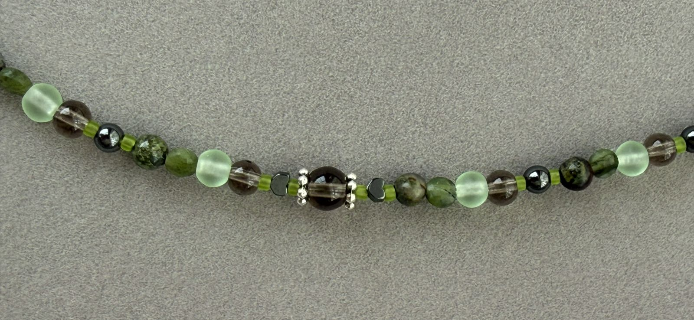
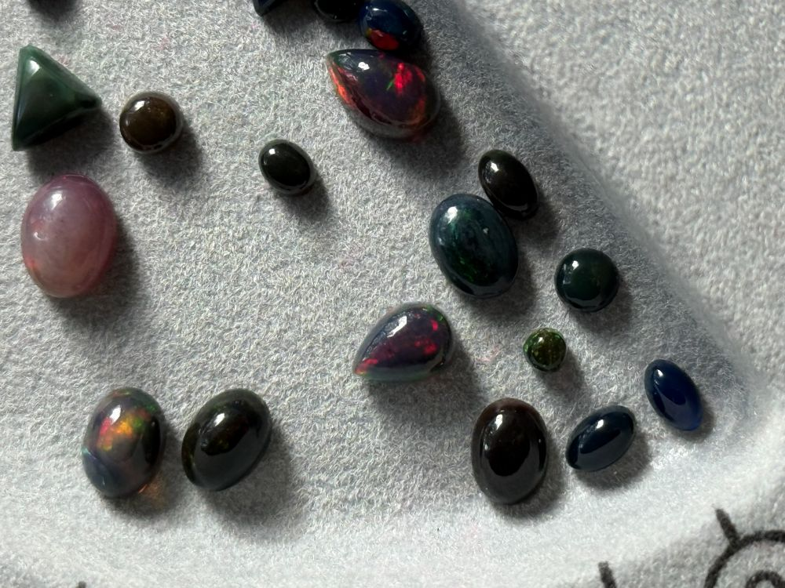

Unique Jewelry
Inspired by Nature
Handmade beadwork featuring natural gemstones, thoughtful design, and timeless craftsmanship.
Explore CollectionsFeatured Collections

Earrings
About the Artist
FurNina Hollow Jewelry grew from a love of gemstones, color, and creating unique pieces by hand. Each design is thoughtfully created with attention to the natural beauty of the materials and the way different colors, textures, and stones work together.
The goal of FurNina Hollow Jewelry is to create pieces that feel distinctive, meaningful, and wearable while celebrating the individuality of handmade jewelry.
Gemstone Guide

Natural gemstones give each piece of jewelry its own colors, patterns, textures, and character. Because gemstones are formed naturally, variations between individual stones make every piece unique.
The Gemstone Guide introduces some of the stones featured in FurNina Hollow Jewelry and provides information about their appearance, properties, and use in jewelry designs.
History of Beadwork

Beadwork has a long history as both a decorative art and a form of personal expression. Beads have been created from materials such as stone, glass, metal, shell, and other natural materials.
Contemporary jewelry artists continue the tradition by combining established techniques with modern materials and individual design styles. FurNina Hollow Jewelry draws inspiration from this tradition while creating jewelry for modern wear.